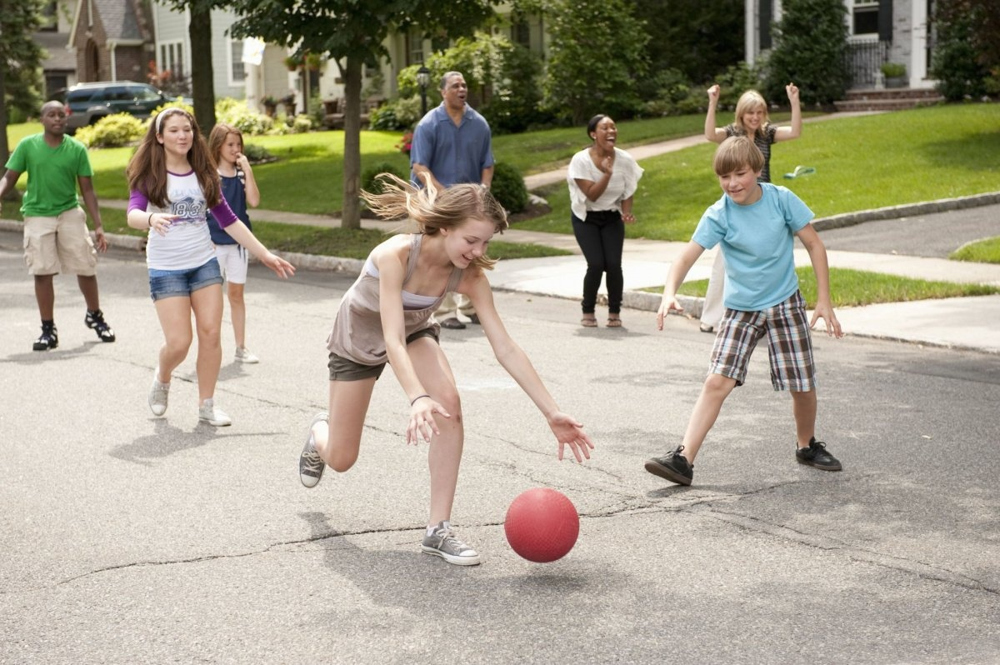

Головна
Головна
 Батькам
Батькам
 Методичні матеріали
Методичні матеріали
 Розклад
Розклад
|
Веселі заняття для школярів |
|---|
Ігри з перешкодамиЦе веселе заняття сподобається дітям, тому що змушує дітей бігати, стрибати і проявляти фізичну активність. Зробіть для дитини у дворі або в парку смугу перешкод. Використовуйте для цього підручні засоби: обручі, колоди і т.д. і запропонуйте пройти всі перешкоди до кінця. Годуйте птахівВізьміть трохи пшона або іншої крупи і сходіть з дитиною в парк, щоб погодувати горобців або голубів. Якщо біля будинку є ставок, ви можете нагодувати качок і спостерігати за ними. Це відмінний спосіб провести час з вашим малюком. Зробіть прибирання у дворіЯкщо ви живете в приватному будинку, це чудовий спосіб провести час з дітьми. Бонусом для вас буде чистий двір. Якщо у вас у дворі ростуть дерева, ймовірно, на землі лежить багато опалого листя, гілок і т.д. ви можете прибрати їх разом з дитиною. Дайте йому невелике відро і запропонуйте зібрати всі гілки та листя. Вирощуйте рослиниНавчіть дитину вирощувати рослини. Почніть з вирощування рослин у вазонах або кущах. Запропонуйте дитині своїми руками посадити насіння в вазон, поливати їх і спостерігати, як з'являються паростки. Якщо дитина забруднить руки під час такого заняття – нічого страшного. Катайтеся на велосипедахДіти дуже люблять кататися на велосипеді, і весна – прекрасний час для цього. Велопрогулянка збагатить організм дитини вітаміном D і стане для нього хорошим фізичним заняттям. Влаштуйте пікнікПроведіть день з дитиною в парку. Візьміть із собою легкі закуски, ковдру, бадмінтон або роликові ковзани та вирушайте до найближчого парку. |
Зв'язок зі мною Телеграм: @dkhoock
Телеграм: @dkhoock
 пошта: avdeenko2211@gmail.com
пошта: avdeenko2211@gmail.com
 Інстаграм: @avdeenkovasil
Інстаграм: @avdeenkovasil
|
|---|